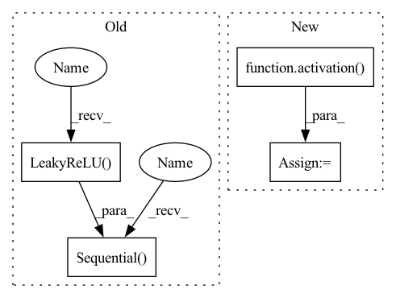

Pattern ID :35520

Before Change
class FeedForward(nn.Module):
def __init__(self, dim, mult = 4):
super().__init__()
self.net = nn.Sequential(
nn.Linear(dim, mult * dim, bias=False),
nn.LeakyReLU(inplace=True),
nn.Linear(dim * mult, dim, bias=False)
)
def forward(self, x, **kwargs):
return self.net(x)
After Change
self.glu = glu
self.w1 = nn.Linear(dim, dim * mult * (2 if glu else 1))
self.act = activation()
self.dropout = nn.Dropout(dropout)
self.w2 = nn.Linear(dim * mult, dim)
def forward(self, x, **kwargs):
In pattern: SUPERPATTERN
Frequency: 3
Non-data size: 4
Instances
Fragment ID: 101399955
Project Name: lucidrains/linear-attention-transformer
Commit Name: 6004af7a815d368c1a016ab43cb03e41b0b66e33
Time: 2020-06-06
Author: lucidrains@gmail.com
File Name: linear_attention_transformer/linear_attention_transformer.py
M Class Name: FeedForward
N Class Name: FeedForward
M Method Name: __init__(6)
N Method Name: __init__(3)
M Parent Class: nn.Module
N Parent Class: nn.Module
M File Name: linear_attention_transformer/linear_attention_transformer.py
N File Name: linear_attention_transformer/linear_attention_transformer.py
M Start Line: 168
M End Line: 174
N Start Line: 182
N End Line: 190
'>
Before Change
class FeedForward(nn.Module):
def __init__(self, dim, mult = 4):
super().__init__()
self.net = nn.Sequential(
nn.Linear(dim, dim * mult, bias = False),
nn.LeakyReLU(inplace=True),
nn.Linear(dim * mult, dim, bias = False)
)
def forward(self, x):
return self.net(x)
After Change
self.glu = glu
self.w1 = nn.Linear(dim, dim * mult * (2 if glu else 1))
self.act = activation()
self.dropout = nn.Dropout(dropout)
self.w2 = nn.Linear(dim * mult, dim)
def forward(self, x, **kwargs):
'>
Fragment ID: 101399957
Project Name: lucidrains/routing-transformer
Commit Name: f1840953b8703b6895c61dabd65578843fd91412
Time: 2020-05-22
Author: lucidrains@gmail.com
File Name: routing_transformer/routing_transformer.py
M Class Name: FeedForward
N Class Name: FeedForward
M Method Name: __init__(6)
N Method Name: __init__(3)
M Parent Class: nn.Module
N Parent Class: nn.Module
M File Name: routing_transformer/routing_transformer.py
N File Name: routing_transformer/routing_transformer.py
M Start Line: 290
M End Line: 296
N Start Line: 300
N End Line: 308
'>
Before Change
class FeedForward(nn.Module):
def __init__(self, dim, mult = 4):
super().__init__()
self.net = nn.Sequential(
nn.Linear(dim, dim * mult),
nn.LeakyReLU(inplace = True),
nn.Linear(dim * mult, dim)
)
def forward(self, x, **kwargs):
return self.net(x)
// attention.
After Change
self.glu = glu
self.w1 = nn.Linear(dim, dim * mult * (2 if glu else 1))
self.act = activation()
self.dropout = nn.Dropout(dropout)
self.w2 = nn.Linear(dim * mult, dim)
def forward(self, x, **kwargs):
'>
Fragment ID: 101399956
Project Name: lucidrains/compressive-transformer-pytorch
Commit Name: da19be5e847ca2bc6243b8d39808b1ccd225d62d
Time: 2020-07-02
Author: lucidrains@gmail.com
File Name: compressive_transformer_pytorch/compressive_transformer_pytorch.py
M Class Name: FeedForward
N Class Name: FeedForward
M Method Name: __init__(6)
N Method Name: __init__(3)
M Parent Class: nn.Module
N Parent Class: nn.Module
M File Name: compressive_transformer_pytorch/compressive_transformer_pytorch.py
N File Name: compressive_transformer_pytorch/compressive_transformer_pytorch.py
M Start Line: 103
M End Line: 109
N Start Line: 109
N End Line: 117